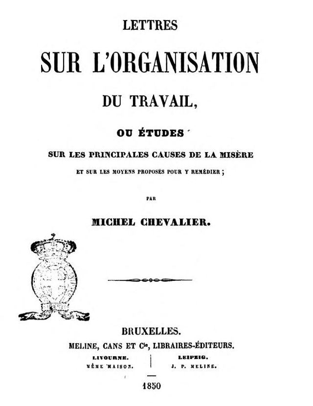
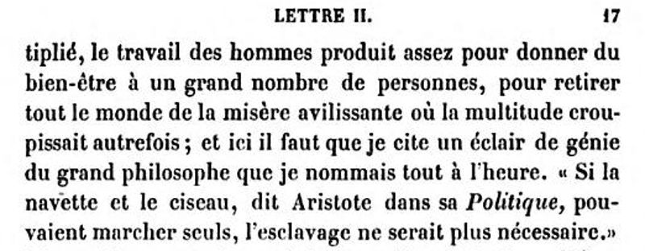

Aristotle’s shuttle and the liberating power of capital (Letter II, pp. 16–17)
French: Brussels 1850, Letter II, p. 17, scan n24. Highlighted: the saying Lecky borrows and the conclusion he draws from it.

… The mighty intelligence of Aristotle, to explain how there could be men reduced to this lamentable condition, is obliged to distinguish two natures in the human species: the free nature and the slave nature.
On the other hand, when capital has grown and multiplied, men’s labour produces enough to give comfort to a great number of people, to draw everyone out of the degrading poverty in which the multitude once wallowed; and here I must quote a flash of genius from the great philosopher I named a moment ago. “If the shuttle and the chisel,” says Aristotle in his Politics, “could work by themselves, slavery would no longer be necessary.” The growth of capital has in fact solved the problem of making the shuttle and the chisel work by themselves; and then, as the Stagirite deeply foresaw, slavery could disappear, and the worker could become free and aspire, for his children and for himself, to better and worthier destinies. … History in hand, we have the right to proclaim it: [capital] is a great liberator.
Translation: this edition’s draft.
Original French
… La puissante intelligence d’Aristote, pour expliquer qu’il y ait des hommes réduits à cette lamentable condition, est obligée de distinguer dans l’espèce humaine deux natures: la nature libre et la nature esclave.
Au contraire, quand le capital s’est agrandi et s’est mul-[p. 17]tiplié, le travail des hommes produit assez pour donner du bien-être à un grand nombre de personnes, pour retirer tout le monde de la misère avilissante où la multitude croupissait autrefois; et ici il faut que je cite un éclair de génie du grand philosophe que je nommais tout à l’heure. « Si la navette et le ciseau, dit Aristote dans sa Politique, pouvaient marcher seuls, l’esclavage ne serait plus nécessaire. » L’agrandissement du capital a en effet résolu le problème de faire marcher seuls la navette et le ciseau; et alors, selon le pressentiment profond du Stagyrite, l’esclavage a pu disparaître, le travailleur a pu devenir libre et aspirer pour ses enfants et pour lui-même à des destinées meilleures et plus dignes. … L’histoire à la main, nous avons le droit de le proclamer, c’est un grand libérateur.
Lecky (vol. II, ch. V, text at note 126): “‘If the hammer and the shuttle could move themselves,’ said Aristotle, ‘slavery would be unnecessary,’ and machinery having virtually fulfilled the condition, the predicted result has followed.” The rest of Lecky’s paragraph, that without capital the many sink to bare subsistence, is Chevalier’s argument on p. 16 too. Chevalier’s “Stagyrite” is his spelling.
Further down the rabbit hole
Sources that Lecky cites in the notes next to the ones that cite this page.
- Cibrario, Della economia politica del medio evoTurin, 1388: a heretic who held that the Devil made Adam and Eve, and that usury was no sin
- Montaigne, EssaisLecky cuts Montaigne short and changes a word
- Buckle, History of Civilization in EnglandWeather and credulity, and the Scottish clergy’s Devil who had been studying for five thousand years
- An Homily against Disobedience and Wilful RebellionHell as the prison of rebels: the Church of England preaches obedience
- Aquinas, Summa theologiae, II-IIHeretics and forgers; the usurper’s subjects
- Ayala, De jure et officiis bellicisAnyone may kill a usurper, not a lawful prince


Backlinks
Every place in Rationalism in Europe that links to this page (generated automatically when the site is built).
- Chapter V: note 126